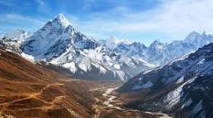
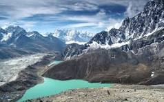
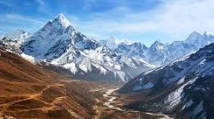
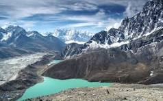

About the Himalayas
The Himalayas are the world’s highest mountain range, stretching across northern India. They are home to Mount Everest, Kanchenjunga, and Nanda Devi, along with numerous glaciers, rivers, and breathtaking valleys. The Himalayas are also rich in spirituality, with many temples, monasteries, and yoga retreats nestled in the mountains.
Why Visit?
- Perfect for trekking, mountaineering, and adventure sports.
- Home to sacred pilgrimage sites like Kedarnath, Badrinath, Amarnath, and Vaishno Devi.
- Peaceful valleys such as Kashmir, Himachal Pradesh, and Uttarakhand.
- Rich biodiversity with rare flora and fauna.
Location & Travel
The Himalayas stretch across multiple states – Jammu & Kashmir, Himachal Pradesh, Uttarakhand, Sikkim, and Arunachal Pradesh.
Nearest Airports: Srinagar, Leh, Dehradun, Shimla, Bagdogra (depending on region).
Nearest Railway Stations: Jammu Tawi, Dehradun, Kalka, New Jalpaiguri.
Visiting Details
- Best Time to Visit: March to June (summer treks), September to November (autumn views). Avoid monsoons.
- Popular Activities: Trekking, camping, rafting, skiing, spiritual tours.
Average Travel Expense
A trip to the Himalayas can vary widely:
- Budget: ₹2,500 – ₹4,000 per day (hostels, local food, shared travel).
- Mid-range: ₹5,000 – ₹8,000 per day (comfortable hotels, guided tours).